Stage 4 · standard · scout
Airbase Grey Scout
Anchors: {"center":[128,145]}
VFX: {"muzzle":"heavy-military-cannon-muzzle","projectile":"heavy-heavy-cannon-shell","secondary":"heavy-toxic-jungle-missile","impact":"heavy-flak-blossom"}
- airbase-grey-scout-aimed-burst · 1450 ms cooldown · 3 events
- airbase-grey-scout-bracket-fan · 2350 ms cooldown · 1 event
- airbase-grey-scout-dash-burst · 3400 ms cooldown · 2 events
- airbase-grey-scout-critical-rage · 4700 ms cooldown · below 35% HP · 2 events
- baked firing flash plus separate muzzle VFX reference
Stage 4 · standard · air
Airbase Heavy Fighter
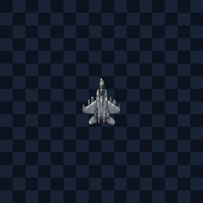
Anchors: {"center":[128,145]}
VFX: {"muzzle":"heavy-military-cannon-muzzle","projectile":"heavy-heavy-cannon-shell","secondary":"heavy-toxic-jungle-missile","impact":"heavy-flak-blossom"}
- airbase-heavy-fighter-aimed-burst · 1450 ms cooldown · 3 events
- airbase-heavy-fighter-bracket-fan · 2350 ms cooldown · 1 event
- airbase-heavy-fighter-weaving-fan · 3400 ms cooldown · 2 events
- airbase-heavy-fighter-critical-rage · 4700 ms cooldown · below 35% HP · 2 events
- baked firing flash plus separate muzzle VFX reference
Stage 4 · standard · air
Airbase Olive Jet
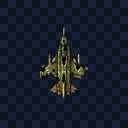
Anchors: {"center":[128,171]}
VFX: {"muzzle":"heavy-military-cannon-muzzle","projectile":"heavy-heavy-cannon-shell","secondary":"heavy-toxic-jungle-missile","impact":"heavy-flak-blossom"}
- airbase-olive-jet-aimed-burst · 1450 ms cooldown · 3 events
- airbase-olive-jet-bracket-fan · 2350 ms cooldown · 1 event
- airbase-olive-jet-weaving-fan · 3400 ms cooldown · 2 events
- airbase-olive-jet-critical-rage · 4700 ms cooldown · below 35% HP · 2 events
- death loses 85% silhouette coverage
- baked firing flash plus separate muzzle VFX reference
Stage 4 · standard · air
Airbase Strike Wing
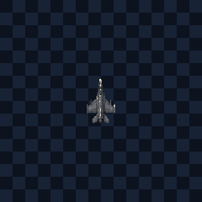
Anchors: {"center":[128,145]}
VFX: {"muzzle":"heavy-military-cannon-muzzle","projectile":"heavy-heavy-cannon-shell","secondary":"heavy-toxic-jungle-missile","impact":"heavy-flak-blossom"}
- airbase-strike-wing-aimed-burst · 1450 ms cooldown · 3 events
- airbase-strike-wing-bracket-fan · 2350 ms cooldown · 1 event
- airbase-strike-wing-weaving-fan · 3400 ms cooldown · 2 events
- airbase-strike-wing-critical-rage · 4700 ms cooldown · below 35% HP · 2 events
- baked firing flash plus separate muzzle VFX reference
Stage 1 · standard · hazard
Ammo Crate
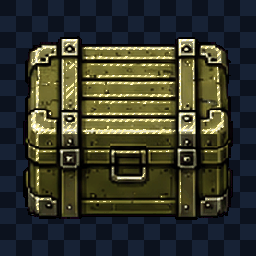
Anchors: {"core":[128,128]}
VFX: {"muzzle":"heavy-military-cannon-muzzle","projectile":"heavy-heavy-fuse-bomb","secondary":"heavy-flak-blossom","impact":"heavy-inferno-impact"}
- ammo-crate-proximity-bloom · 2600 ms cooldown · 1 event
- ammo-crate-fuse-burst · 3200 ms cooldown · 1 event
- ammo-crate-chain-detonation · 4400 ms cooldown · 1 event
- ammo-crate-rage-ring · 5200 ms cooldown · below 35% HP · 1 event
- death loses 92% silhouette coverage
- baked firing flash plus separate muzzle VFX reference
Stage 6 · standard · air
Black Delta
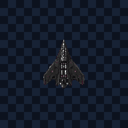
Anchors: {"center":[128,158]}
VFX: {"muzzle":"heavy-blacksteel-rail-muzzle","projectile":"heavy-blacksteel-penetrator","secondary":"heavy-heavy-cannon-shell","impact":"heavy-emp-shock-ring"}
- black-delta-aimed-burst · 1450 ms cooldown · 3 events
- black-delta-bracket-fan · 2350 ms cooldown · 1 event
- black-delta-weaving-fan · 3400 ms cooldown · 2 events
- black-delta-critical-rage · 4700 ms cooldown · below 35% HP · 2 events
- baked firing flash plus separate muzzle VFX reference
Stage 6 · elite · carrier
Blacksteel Carrier
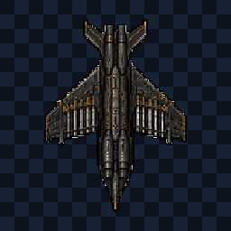
Anchors: {"left":[88,193],"right":[168,193]}
VFX: {"muzzle":"heavy-blacksteel-rail-muzzle","projectile":"heavy-blacksteel-penetrator","secondary":"heavy-heavy-cannon-shell","impact":"heavy-emp-shock-ring"}
- blacksteel-carrier-aimed-burst · 1450 ms cooldown · 3 events
- blacksteel-carrier-bracket-fan · 2350 ms cooldown · 1 event
- blacksteel-carrier-turret-lattice · 3400 ms cooldown · 2 events
- blacksteel-carrier-critical-rage · 4700 ms cooldown · below 35% HP · 2 events
- death loses 86% silhouette coverage
- 1 frame(s) touch canvas edge
- baked firing flash plus separate muzzle VFX reference
Stage 1 · standard · air
Camo Attack Jet
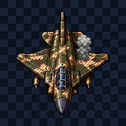
Anchors: {"left":[80,192],"right":[175,192]}
VFX: {"muzzle":"heavy-military-cannon-muzzle","projectile":"heavy-heavy-cannon-shell","secondary":"heavy-toxic-jungle-missile","impact":"heavy-flak-blossom"}
- camo-attack-jet-aimed-burst · 1450 ms cooldown · 3 events
- camo-attack-jet-bracket-fan · 2350 ms cooldown · 1 event
- camo-attack-jet-weaving-fan · 3400 ms cooldown · 2 events
- camo-attack-jet-critical-rage · 4700 ms cooldown · below 35% HP · 2 events
- death loses 92% silhouette coverage
- baked firing flash plus separate muzzle VFX reference
Stage 3 · elite · carrier
Cryo Spear
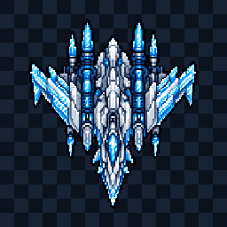
Anchors: {"left":[79,193],"right":[176,193]}
VFX: {"muzzle":"heavy-cryo-cannon-muzzle","projectile":"heavy-cryogenic-lance","secondary":"heavy-cryo-missile","impact":"heavy-ice-shatter-impact"}
- cryo-spear-aimed-burst · 1450 ms cooldown · 3 events
- cryo-spear-bracket-fan · 2350 ms cooldown · 1 event
- cryo-spear-turret-lattice · 3400 ms cooldown · 2 events
- cryo-spear-critical-rage · 4700 ms cooldown · below 35% HP · 2 events
- death loses 88% silhouette coverage
- 1 frame(s) touch canvas edge
- baked firing flash plus separate muzzle VFX reference
Stage 9 · standard · razor
Crystal Breaker
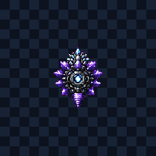
Anchors: {"center":[128,158]}
VFX: {"muzzle":"cosmic-warp-star-muzzle","projectile":"cosmic-crystal-spike","secondary":"cosmic-lattice-fan","impact":"cosmic-rift-collapse"}
- crystal-breaker-aimed-burst · 1450 ms cooldown · 3 events
- crystal-breaker-bracket-fan · 2350 ms cooldown · 1 event
- crystal-breaker-razor-spiral · 3400 ms cooldown · 2 events
- crystal-breaker-critical-rage · 4700 ms cooldown · below 35% HP · 2 events
- death loses 72% silhouette coverage
- baked firing flash plus separate muzzle VFX reference
Stage 6 · standard · scout
Ember Interceptor
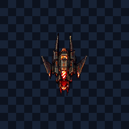
Anchors: {"center":[128,165]}
VFX: {"muzzle":"heavy-blacksteel-rail-muzzle","projectile":"heavy-blacksteel-penetrator","secondary":"heavy-heavy-cannon-shell","impact":"heavy-emp-shock-ring"}
- ember-interceptor-aimed-burst · 1450 ms cooldown · 3 events
- ember-interceptor-bracket-fan · 2350 ms cooldown · 1 event
- ember-interceptor-dash-burst · 3400 ms cooldown · 2 events
- ember-interceptor-critical-rage · 4700 ms cooldown · below 35% HP · 2 events
- baked firing flash plus separate muzzle VFX reference
Stage 1 · standard · hazard
Fuel Barrel
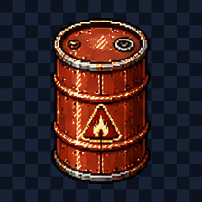
Anchors: {"core":[128,128]}
VFX: {"muzzle":"heavy-military-cannon-muzzle","projectile":"heavy-heavy-fuse-bomb","secondary":"heavy-flak-blossom","impact":"heavy-inferno-impact"}
- fuel-barrel-proximity-bloom · 2600 ms cooldown · 1 event
- fuel-barrel-fuse-burst · 3200 ms cooldown · 1 event
- fuel-barrel-chain-detonation · 4400 ms cooldown · 1 event
- fuel-barrel-rage-ring · 5200 ms cooldown · below 35% HP · 1 event
- death loses 90% silhouette coverage
- baked firing flash plus separate muzzle VFX reference
Stage 1 · standard · hazard
Fuel Tank
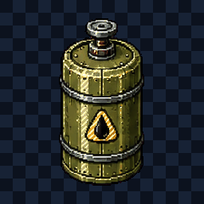
Anchors: {"core":[128,128]}
VFX: {"muzzle":"heavy-military-cannon-muzzle","projectile":"heavy-heavy-fuse-bomb","secondary":"heavy-flak-blossom","impact":"heavy-inferno-impact"}
- fuel-tank-proximity-bloom · 2600 ms cooldown · 1 event
- fuel-tank-fuse-burst · 3200 ms cooldown · 1 event
- fuel-tank-chain-detonation · 4400 ms cooldown · 1 event
- fuel-tank-rage-ring · 5200 ms cooldown · below 35% HP · 1 event
- death loses 88% silhouette coverage
- baked firing flash plus separate muzzle VFX reference
Stage 8 · elite · manta
Furious Bloodwing
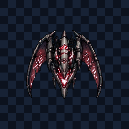
Anchors: {"left":[90,169],"right":[166,169]}
VFX: {"muzzle":"cosmic-crescent-arc-muzzle","projectile":"cosmic-manta-wave","secondary":"cosmic-gravity-leech-orb","impact":"cosmic-void-shock-ring"}
- furious-bloodwing-aimed-burst · 1450 ms cooldown · 3 events
- furious-bloodwing-bracket-fan · 2350 ms cooldown · 1 event
- furious-bloodwing-crescent-sweep · 3400 ms cooldown · 2 events
- furious-bloodwing-critical-rage · 4700 ms cooldown · below 35% HP · 2 events
- death loses 84% silhouette coverage
- baked firing flash plus separate muzzle VFX reference
Stage 8 · boss · fortress
Furious Core Leviathan
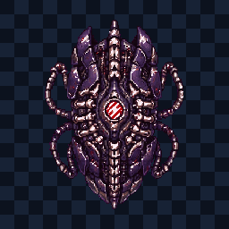
Anchors: {"left":[89,192],"right":[166,192],"center":[128,202]}
VFX: {"muzzle":"cosmic-warp-star-muzzle","projectile":"cosmic-warden-beam-head","secondary":"cosmic-singularity-mine","impact":"cosmic-rift-collapse"}
- furious-core-leviathan-aimed-burst · 1450 ms cooldown · 3 events
- furious-core-leviathan-bracket-fan · 2350 ms cooldown · 1 event
- furious-core-leviathan-section-barrage · 3400 ms cooldown · 2 events
- furious-core-leviathan-critical-rage · 4700 ms cooldown · below 35% HP · 2 events
- death loses 91% silhouette coverage
- 2 frame(s) touch canvas edge
- baked firing flash plus separate muzzle VFX reference
Stage 8 · elite · razor
Furious Null Disk
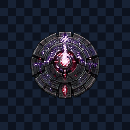
Anchors: {"left":[94,168],"right":[162,168]}
VFX: {"muzzle":"cosmic-warp-star-muzzle","projectile":"cosmic-crystal-spike","secondary":"cosmic-lattice-fan","impact":"cosmic-rift-collapse"}
- furious-null-disk-aimed-burst · 1450 ms cooldown · 3 events
- furious-null-disk-bracket-fan · 2350 ms cooldown · 1 event
- furious-null-disk-razor-spiral · 3400 ms cooldown · 2 events
- furious-null-disk-critical-rage · 4700 ms cooldown · below 35% HP · 2 events
- death loses 89% silhouette coverage
- baked firing flash plus separate muzzle VFX reference
Stage 8 · elite · razor
Furious Void Razor
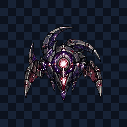
Anchors: {"left":[88,173],"right":[167,173]}
VFX: {"muzzle":"cosmic-warp-star-muzzle","projectile":"cosmic-crystal-spike","secondary":"cosmic-lattice-fan","impact":"cosmic-rift-collapse"}
- furious-void-razor-aimed-burst · 1450 ms cooldown · 3 events
- furious-void-razor-bracket-fan · 2350 ms cooldown · 1 event
- furious-void-razor-razor-spiral · 3400 ms cooldown · 2 events
- furious-void-razor-critical-rage · 4700 ms cooldown · below 35% HP · 2 events
- death loses 88% silhouette coverage
- baked firing flash plus separate muzzle VFX reference
Stage 9 · standard · bio
Gravity Leech
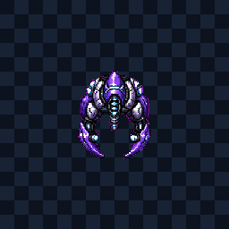
Anchors: {"center":[128,158]}
VFX: {"muzzle":"cosmic-crescent-arc-muzzle","projectile":"cosmic-manta-wave","secondary":"cosmic-gravity-leech-orb","impact":"cosmic-void-shock-ring"}
- gravity-leech-aimed-burst · 1450 ms cooldown · 3 events
- gravity-leech-bracket-fan · 2350 ms cooldown · 1 event
- gravity-leech-leech-chain · 3400 ms cooldown · 2 events
- gravity-leech-critical-rage · 4700 ms cooldown · below 35% HP · 2 events
- death loses 69% silhouette coverage
- baked firing flash plus separate muzzle VFX reference
Stage 2 · elite · carrier
Inferno Reaver
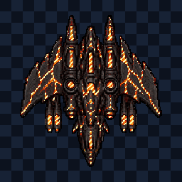
Anchors: {"left":[78,193],"right":[177,193]}
VFX: {"muzzle":"heavy-rotary-cannon-muzzle","projectile":"heavy-incendiary-plasma","secondary":"heavy-inferno-micro-missile","impact":"heavy-inferno-impact"}
- inferno-reaver-aimed-burst · 1450 ms cooldown · 3 events
- inferno-reaver-bracket-fan · 2350 ms cooldown · 1 event
- inferno-reaver-turret-lattice · 3400 ms cooldown · 2 events
- inferno-reaver-critical-rage · 4700 ms cooldown · below 35% HP · 2 events
- death loses 89% silhouette coverage
- 1 frame(s) touch canvas edge
- baked firing flash plus separate muzzle VFX reference
Stage 1 · standard · ground
Jungle APC
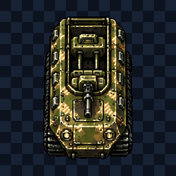
Anchors: {"left":[95,192],"right":[161,192]}
VFX: {"muzzle":"heavy-military-cannon-muzzle","projectile":"heavy-heavy-cannon-shell","secondary":"heavy-toxic-jungle-missile","impact":"heavy-flak-blossom"}
- jungle-apc-aimed-burst · 1450 ms cooldown · 3 events
- jungle-apc-bracket-fan · 2350 ms cooldown · 1 event
- jungle-apc-armored-bracket · 3400 ms cooldown · 2 events
- jungle-apc-critical-rage · 4700 ms cooldown · below 35% HP · 2 events
- death loses 94% silhouette coverage
- baked firing flash plus separate muzzle VFX reference
Stage 1 · standard · bomber
Jungle Bomber
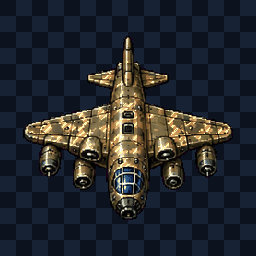
Anchors: {"left":[76,168],"right":[180,168]}
VFX: {"muzzle":"heavy-military-cannon-muzzle","projectile":"heavy-heavy-cannon-shell","secondary":"heavy-toxic-jungle-missile","impact":"heavy-flak-blossom"}
- jungle-bomber-aimed-burst · 1450 ms cooldown · 3 events
- jungle-bomber-bracket-fan · 2350 ms cooldown · 1 event
- jungle-bomber-bomb-corridor · 3400 ms cooldown · 2 events
- jungle-bomber-critical-rage · 4700 ms cooldown · below 35% HP · 2 events
- death loses 92% silhouette coverage
- baked firing flash plus separate muzzle VFX reference
Stage 1 · elite · carrier
Jungle Cruiser
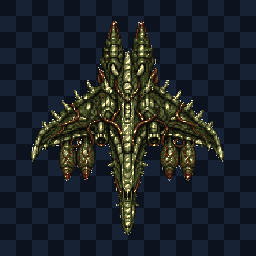
Anchors: {"left":[79,193],"right":[176,193]}
VFX: {"muzzle":"heavy-military-cannon-muzzle","projectile":"heavy-heavy-cannon-shell","secondary":"heavy-toxic-jungle-missile","impact":"heavy-flak-blossom"}
- jungle-cruiser-aimed-burst · 1450 ms cooldown · 3 events
- jungle-cruiser-bracket-fan · 2350 ms cooldown · 1 event
- jungle-cruiser-turret-lattice · 3400 ms cooldown · 2 events
- jungle-cruiser-critical-rage · 4700 ms cooldown · below 35% HP · 2 events
- death loses 92% silhouette coverage
- 1 frame(s) touch canvas edge
- baked firing flash plus separate muzzle VFX reference
Stage 1 · standard · ground
Jungle Heavy Tank
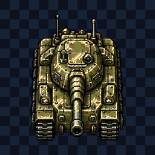
Anchors: {"left":[89,192],"right":[166,192]}
VFX: {"muzzle":"heavy-military-cannon-muzzle","projectile":"heavy-heavy-cannon-shell","secondary":"heavy-toxic-jungle-missile","impact":"heavy-flak-blossom"}
- jungle-heavy-tank-aimed-burst · 1450 ms cooldown · 3 events
- jungle-heavy-tank-bracket-fan · 2350 ms cooldown · 1 event
- jungle-heavy-tank-armored-bracket · 3400 ms cooldown · 2 events
- jungle-heavy-tank-critical-rage · 4700 ms cooldown · below 35% HP · 2 events
- death loses 94% silhouette coverage
- baked firing flash plus separate muzzle VFX reference
Stage 1 · standard · ground
Jungle Mini Tank
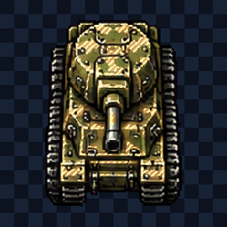
Anchors: {"left":[89,192],"right":[166,192]}
VFX: {"muzzle":"heavy-military-cannon-muzzle","projectile":"heavy-heavy-cannon-shell","secondary":"heavy-toxic-jungle-missile","impact":"heavy-flak-blossom"}
- jungle-mini-tank-aimed-burst · 1450 ms cooldown · 3 events
- jungle-mini-tank-bracket-fan · 2350 ms cooldown · 1 event
- jungle-mini-tank-armored-bracket · 3400 ms cooldown · 2 events
- jungle-mini-tank-critical-rage · 4700 ms cooldown · below 35% HP · 2 events
- death loses 94% silhouette coverage
- baked firing flash plus separate muzzle VFX reference
Stage 1 · standard · naval
Landing Craft
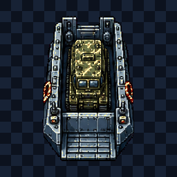
Anchors: {"left":[94,192],"right":[161,192]}
VFX: {"muzzle":"heavy-military-cannon-muzzle","projectile":"heavy-heavy-cannon-shell","secondary":"heavy-toxic-jungle-missile","impact":"heavy-flak-blossom"}
- landing-craft-aimed-burst · 1450 ms cooldown · 3 events
- landing-craft-bracket-fan · 2350 ms cooldown · 1 event
- landing-craft-wake-crossfire · 3400 ms cooldown · 2 events
- landing-craft-critical-rage · 4700 ms cooldown · below 35% HP · 2 events
- death loses 94% silhouette coverage
- baked firing flash plus separate muzzle VFX reference
Stage 2 · boss · fortress
Magmaward — Critical
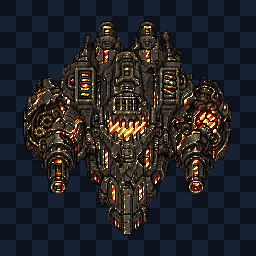
Anchors: {"left":[75,193],"right":[180,193],"center":[128,202]}
VFX: {"muzzle":"heavy-rotary-cannon-muzzle","projectile":"heavy-incendiary-plasma","secondary":"heavy-inferno-micro-missile","impact":"heavy-inferno-impact"}
- magmaward-critical-aimed-burst · 1450 ms cooldown · 3 events
- magmaward-critical-bracket-fan · 2350 ms cooldown · 1 event
- magmaward-critical-section-barrage · 3400 ms cooldown · 2 events
- magmaward-critical-critical-rage · 4700 ms cooldown · below 35% HP · 2 events
- death loses 90% silhouette coverage
- 2 frame(s) touch canvas edge
- baked firing flash plus separate muzzle VFX reference
Stage 1 · standard · missile
Missile Gunboat
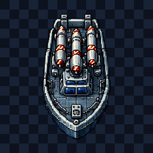
Anchors: {"center":[128,174]}
VFX: {"muzzle":"heavy-military-cannon-muzzle","projectile":"heavy-toxic-jungle-missile","secondary":"heavy-inferno-micro-missile","impact":"heavy-flak-blossom"}
- missile-gunboat-aimed-burst · 1450 ms cooldown · 3 events
- missile-gunboat-bracket-fan · 2350 ms cooldown · 1 event
- missile-gunboat-seeker-salvo · 3400 ms cooldown · 2 events
- missile-gunboat-critical-rage · 4700 ms cooldown · below 35% HP · 2 events
- death loses 93% silhouette coverage
- baked firing flash plus separate muzzle VFX reference
Stage 6 · standard · needle
Needle Fighter
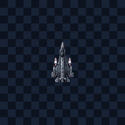
Anchors: {"center":[128,153]}
VFX: {"muzzle":"heavy-blacksteel-rail-muzzle","projectile":"heavy-blacksteel-penetrator","secondary":"heavy-heavy-cannon-shell","impact":"heavy-emp-shock-ring"}
- needle-fighter-aimed-burst · 1450 ms cooldown · 3 events
- needle-fighter-bracket-fan · 2350 ms cooldown · 1 event
- needle-fighter-needle-cross · 3400 ms cooldown · 2 events
- needle-fighter-critical-rage · 4700 ms cooldown · below 35% HP · 2 events
- baked firing flash plus separate muzzle VFX reference
Stage 4 · elite · carrier
Olive Carrier
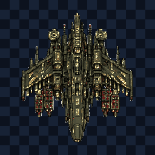
Anchors: {"left":[81,193],"right":[174,193]}
VFX: {"muzzle":"heavy-military-cannon-muzzle","projectile":"heavy-heavy-cannon-shell","secondary":"heavy-toxic-jungle-missile","impact":"heavy-flak-blossom"}
- olive-carrier-aimed-burst · 1450 ms cooldown · 3 events
- olive-carrier-bracket-fan · 2350 ms cooldown · 1 event
- olive-carrier-turret-lattice · 3400 ms cooldown · 2 events
- olive-carrier-critical-rage · 4700 ms cooldown · below 35% HP · 2 events
- death loses 93% silhouette coverage
- 1 frame(s) touch canvas edge
- baked firing flash plus separate muzzle VFX reference
Stage 4 · boss · fortress
Olive Warden — Critical
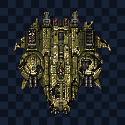
Anchors: {"left":[78,193],"right":[177,193],"center":[128,202]}
VFX: {"muzzle":"heavy-military-cannon-muzzle","projectile":"heavy-heavy-cannon-shell","secondary":"heavy-toxic-jungle-missile","impact":"heavy-flak-blossom"}
- olive-warden-critical-aimed-burst · 1450 ms cooldown · 3 events
- olive-warden-critical-bracket-fan · 2350 ms cooldown · 1 event
- olive-warden-critical-section-barrage · 3400 ms cooldown · 2 events
- olive-warden-critical-critical-rage · 4700 ms cooldown · below 35% HP · 2 events
- death loses 94% silhouette coverage
- 1 frame(s) touch canvas edge
- baked firing flash plus separate muzzle VFX reference
Stage 9 · standard · needle
Prism Needle
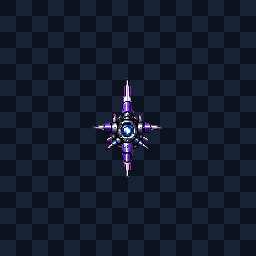
Anchors: {"center":[128,158]}
VFX: {"muzzle":"cosmic-warp-star-muzzle","projectile":"cosmic-warp-needle","secondary":"cosmic-phase-shard-volley","impact":"cosmic-prism-impact"}
- prism-needle-aimed-burst · 1450 ms cooldown · 3 events
- prism-needle-bracket-fan · 2350 ms cooldown · 1 event
- prism-needle-needle-cross · 3400 ms cooldown · 2 events
- prism-needle-critical-rage · 4700 ms cooldown · below 35% HP · 2 events
- baked firing flash plus separate muzzle VFX reference
Stage 1 · standard · air
Prop Attack Plane
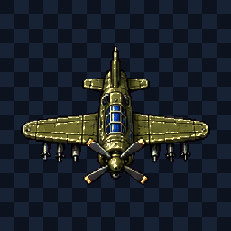
Anchors: {"left":[76,174],"right":[180,174]}
VFX: {"muzzle":"heavy-military-cannon-muzzle","projectile":"heavy-heavy-cannon-shell","secondary":"heavy-toxic-jungle-missile","impact":"heavy-flak-blossom"}
- prop-attack-plane-aimed-burst · 1450 ms cooldown · 3 events
- prop-attack-plane-bracket-fan · 2350 ms cooldown · 1 event
- prop-attack-plane-weaving-fan · 3400 ms cooldown · 2 events
- prop-attack-plane-critical-rage · 4700 ms cooldown · below 35% HP · 2 events
- death loses 91% silhouette coverage
- baked firing flash plus separate muzzle VFX reference
Stage 3 · boss · fortress
Rimewall — Critical
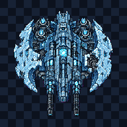
Anchors: {"left":[77,193],"right":[178,193],"center":[128,202]}
VFX: {"muzzle":"heavy-cryo-cannon-muzzle","projectile":"heavy-cryogenic-lance","secondary":"heavy-cryo-missile","impact":"heavy-ice-shatter-impact"}
- rimewall-critical-aimed-burst · 1450 ms cooldown · 3 events
- rimewall-critical-bracket-fan · 2350 ms cooldown · 1 event
- rimewall-critical-section-barrage · 3400 ms cooldown · 2 events
- rimewall-critical-critical-rage · 4700 ms cooldown · below 35% HP · 2 events
- death loses 90% silhouette coverage
- 2 frame(s) touch canvas edge
- baked firing flash plus separate muzzle VFX reference
Stage 1 · standard · naval
River Corvette
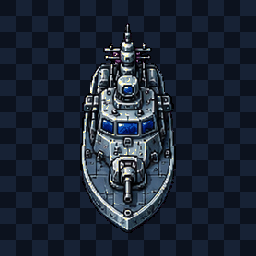
Anchors: {"center":[128,192]}
VFX: {"muzzle":"heavy-military-cannon-muzzle","projectile":"heavy-heavy-cannon-shell","secondary":"heavy-toxic-jungle-missile","impact":"heavy-flak-blossom"}
- river-corvette-aimed-burst · 1450 ms cooldown · 3 events
- river-corvette-bracket-fan · 2350 ms cooldown · 1 event
- river-corvette-wake-crossfire · 3400 ms cooldown · 2 events
- river-corvette-critical-rage · 4700 ms cooldown · below 35% HP · 2 events
- death loses 92% silhouette coverage
- baked firing flash plus separate muzzle VFX reference
Stage 1 · standard · hazard
River Mine
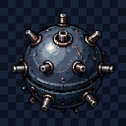
Anchors: {"core":[128,128]}
VFX: {"muzzle":"heavy-military-cannon-muzzle","projectile":"heavy-heavy-fuse-bomb","secondary":"heavy-flak-blossom","impact":"heavy-inferno-impact"}
- river-mine-proximity-bloom · 2600 ms cooldown · 1 event
- river-mine-fuse-burst · 3200 ms cooldown · 1 event
- river-mine-chain-detonation · 4400 ms cooldown · 1 event
- river-mine-rage-ring · 5200 ms cooldown · below 35% HP · 1 event
- death loses 90% silhouette coverage
- baked firing flash plus separate muzzle VFX reference
Stage 1 · standard · naval
River Patrol Boat
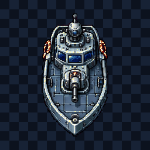
Anchors: {"center":[128,192]}
VFX: {"muzzle":"heavy-military-cannon-muzzle","projectile":"heavy-heavy-cannon-shell","secondary":"heavy-toxic-jungle-missile","impact":"heavy-flak-blossom"}
- river-patrol-boat-aimed-burst · 1450 ms cooldown · 3 events
- river-patrol-boat-bracket-fan · 2350 ms cooldown · 1 event
- river-patrol-boat-wake-crossfire · 3400 ms cooldown · 2 events
- river-patrol-boat-critical-rage · 4700 ms cooldown · below 35% HP · 2 events
- death loses 93% silhouette coverage
- baked firing flash plus separate muzzle VFX reference
Stage 1 · standard · missile
Rocket Buggy
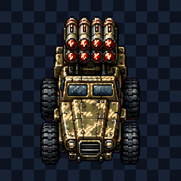
Anchors: {"left":[92,174],"right":[163,174]}
VFX: {"muzzle":"heavy-military-cannon-muzzle","projectile":"heavy-toxic-jungle-missile","secondary":"heavy-inferno-micro-missile","impact":"heavy-flak-blossom"}
- rocket-buggy-aimed-burst · 1450 ms cooldown · 3 events
- rocket-buggy-bracket-fan · 2350 ms cooldown · 1 event
- rocket-buggy-seeker-salvo · 3400 ms cooldown · 2 events
- rocket-buggy-critical-rage · 4700 ms cooldown · below 35% HP · 2 events
- death loses 94% silhouette coverage
- baked firing flash plus separate muzzle VFX reference
Stage 6 · elite · bomber
Silver Tempest Bomber
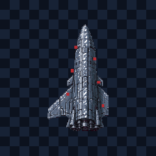
Anchors: {"left":[103,165],"right":[153,165]}
VFX: {"muzzle":"heavy-blacksteel-rail-muzzle","projectile":"heavy-blacksteel-penetrator","secondary":"heavy-heavy-cannon-shell","impact":"heavy-emp-shock-ring"}
- silver-tempest-bomber-aimed-burst · 1450 ms cooldown · 3 events
- silver-tempest-bomber-bracket-fan · 2350 ms cooldown · 1 event
- silver-tempest-bomber-bomb-corridor · 3400 ms cooldown · 2 events
- silver-tempest-bomber-critical-rage · 4700 ms cooldown · below 35% HP · 2 events
- death loses 80% silhouette coverage
- baked firing flash plus separate muzzle VFX reference
Stage 6 · elite · bomber
Storm Heavy Bomber
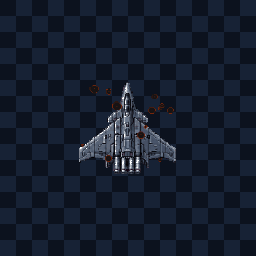
Anchors: {"left":[103,148],"right":[152,148]}
VFX: {"muzzle":"heavy-blacksteel-rail-muzzle","projectile":"heavy-blacksteel-penetrator","secondary":"heavy-heavy-cannon-shell","impact":"heavy-emp-shock-ring"}
- storm-heavy-bomber-aimed-burst · 1450 ms cooldown · 3 events
- storm-heavy-bomber-bracket-fan · 2350 ms cooldown · 1 event
- storm-heavy-bomber-bomb-corridor · 3400 ms cooldown · 2 events
- storm-heavy-bomber-critical-rage · 4700 ms cooldown · below 35% HP · 2 events
- baked firing flash plus separate muzzle VFX reference
Stage 6 · elite · ground
Storm Olive Fortress
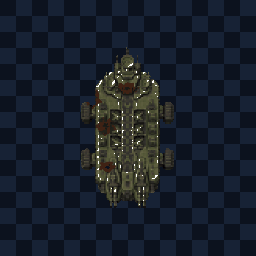
Anchors: {"left":[104,176],"right":[151,176]}
VFX: {"muzzle":"heavy-blacksteel-rail-muzzle","projectile":"heavy-blacksteel-penetrator","secondary":"heavy-heavy-cannon-shell","impact":"heavy-emp-shock-ring"}
- storm-olive-fortress-aimed-burst · 1450 ms cooldown · 3 events
- storm-olive-fortress-bracket-fan · 2350 ms cooldown · 1 event
- storm-olive-fortress-armored-bracket · 3400 ms cooldown · 2 events
- storm-olive-fortress-critical-rage · 4700 ms cooldown · below 35% HP · 2 events
- death loses 81% silhouette coverage
- baked firing flash plus separate muzzle VFX reference
Stage 6 · elite · missile
Storm Warhead Silo
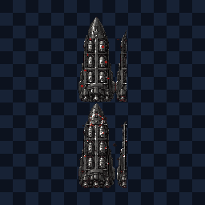
Anchors: {"left":[113,174],"right":[142,174]}
VFX: {"muzzle":"heavy-blacksteel-rail-muzzle","projectile":"heavy-blacksteel-penetrator","secondary":"heavy-heavy-cannon-shell","impact":"heavy-emp-shock-ring"}
- storm-warhead-silo-aimed-burst · 1450 ms cooldown · 3 events
- storm-warhead-silo-bracket-fan · 2350 ms cooldown · 1 event
- storm-warhead-silo-seeker-salvo · 3400 ms cooldown · 2 events
- storm-warhead-silo-critical-rage · 4700 ms cooldown · below 35% HP · 2 events
- death loses 79% silhouette coverage
- baked firing flash plus separate muzzle VFX reference
Stage 9 · standard · missile
Temporal Splitter
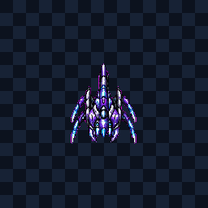
Anchors: {"center":[128,149]}
VFX: {"muzzle":"cosmic-warp-star-muzzle","projectile":"cosmic-warden-beam-head","secondary":"cosmic-singularity-mine","impact":"cosmic-rift-collapse"}
- temporal-splitter-aimed-burst · 1450 ms cooldown · 3 events
- temporal-splitter-bracket-fan · 2350 ms cooldown · 1 event
- temporal-splitter-seeker-salvo · 3400 ms cooldown · 2 events
- temporal-splitter-critical-rage · 4700 ms cooldown · below 35% HP · 2 events
- death loses 68% silhouette coverage
- baked firing flash plus separate muzzle VFX reference
Stage 6 · standard · air
Twinwing Striker
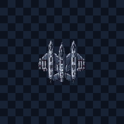
Anchors: {"center":[128,155]}
VFX: {"muzzle":"heavy-blacksteel-rail-muzzle","projectile":"heavy-blacksteel-penetrator","secondary":"heavy-heavy-cannon-shell","impact":"heavy-emp-shock-ring"}
- twinwing-striker-aimed-burst · 1450 ms cooldown · 3 events
- twinwing-striker-bracket-fan · 2350 ms cooldown · 1 event
- twinwing-striker-weaving-fan · 3400 ms cooldown · 2 events
- twinwing-striker-critical-rage · 4700 ms cooldown · below 35% HP · 2 events
- death loses 68% silhouette coverage
- baked firing flash plus separate muzzle VFX reference
Stage 8 · elite · manta
Void Bat
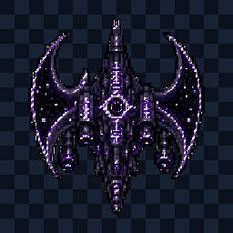
Anchors: {"left":[80,193],"right":[176,193]}
VFX: {"muzzle":"cosmic-crescent-arc-muzzle","projectile":"cosmic-manta-wave","secondary":"cosmic-gravity-leech-orb","impact":"cosmic-void-shock-ring"}
- void-bat-aimed-burst · 1450 ms cooldown · 3 events
- void-bat-bracket-fan · 2350 ms cooldown · 1 event
- void-bat-crescent-sweep · 3400 ms cooldown · 2 events
- void-bat-critical-rage · 4700 ms cooldown · below 35% HP · 2 events
- death loses 90% silhouette coverage
- 1 frame(s) touch canvas edge
- baked firing flash plus separate muzzle VFX reference
Stage 9 · standard · manta
Void Manta
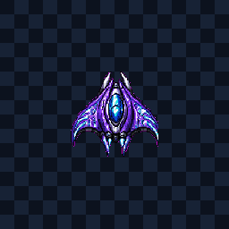
Anchors: {"center":[128,156]}
VFX: {"muzzle":"cosmic-crescent-arc-muzzle","projectile":"cosmic-manta-wave","secondary":"cosmic-gravity-leech-orb","impact":"cosmic-void-shock-ring"}
- void-manta-aimed-burst · 1450 ms cooldown · 3 events
- void-manta-bracket-fan · 2350 ms cooldown · 1 event
- void-manta-crescent-sweep · 3400 ms cooldown · 2 events
- void-manta-critical-rage · 4700 ms cooldown · below 35% HP · 2 events
- death loses 69% silhouette coverage
- baked firing flash plus separate muzzle VFX reference
Stage 1 · standard · air
VTOL Gunship
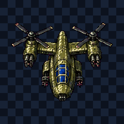
Anchors: {"left":[76,177],"right":[180,177]}
VFX: {"muzzle":"heavy-military-cannon-muzzle","projectile":"heavy-heavy-cannon-shell","secondary":"heavy-toxic-jungle-missile","impact":"heavy-flak-blossom"}
- vtol-gunship-aimed-burst · 1450 ms cooldown · 3 events
- vtol-gunship-bracket-fan · 2350 ms cooldown · 1 event
- vtol-gunship-weaving-fan · 3400 ms cooldown · 2 events
- vtol-gunship-critical-rage · 4700 ms cooldown · below 35% HP · 2 events
- death loses 92% silhouette coverage
- baked firing flash plus separate muzzle VFX reference
Stage 9 · standard · scout
Warp Skimmer
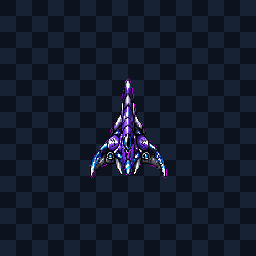
Anchors: {"center":[128,158]}
VFX: {"muzzle":"cosmic-warp-star-muzzle","projectile":"cosmic-warden-beam-head","secondary":"cosmic-singularity-mine","impact":"cosmic-rift-collapse"}
- warp-skimmer-aimed-burst · 1450 ms cooldown · 3 events
- warp-skimmer-bracket-fan · 2350 ms cooldown · 1 event
- warp-skimmer-dash-burst · 3400 ms cooldown · 2 events
- warp-skimmer-critical-rage · 4700 ms cooldown · below 35% HP · 2 events
- baked firing flash plus separate muzzle VFX reference
Stage 9 · elite · carrier
Warp Warden
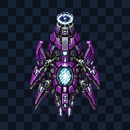
Anchors: {"left":[94,191],"right":[162,191]}
VFX: {"muzzle":"cosmic-warp-star-muzzle","projectile":"cosmic-warden-beam-head","secondary":"cosmic-singularity-mine","impact":"cosmic-rift-collapse"}
- warp-warden-aimed-burst · 1450 ms cooldown · 3 events
- warp-warden-bracket-fan · 2350 ms cooldown · 1 event
- warp-warden-turret-lattice · 3400 ms cooldown · 2 events
- warp-warden-critical-rage · 4700 ms cooldown · below 35% HP · 2 events
- death loses 90% silhouette coverage
- 1 frame(s) touch canvas edge
- baked firing flash plus separate muzzle VFX reference